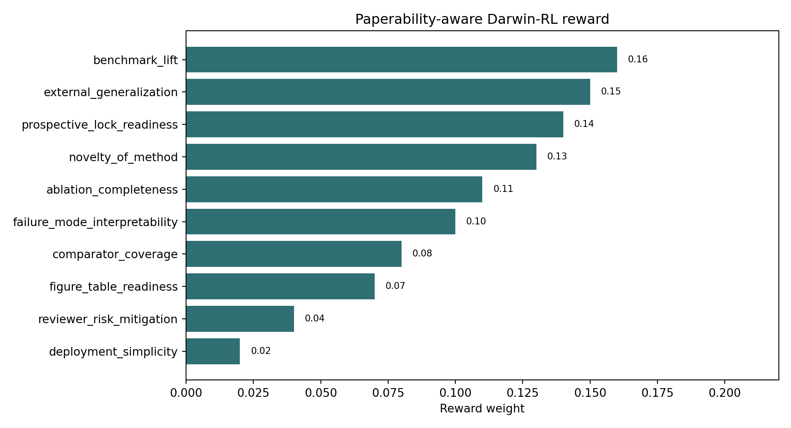
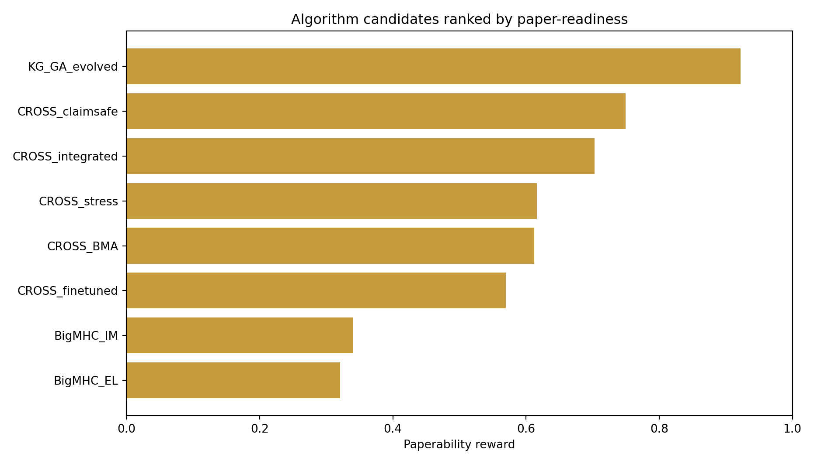
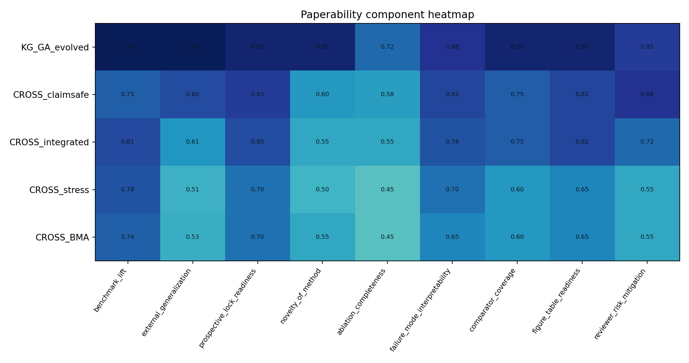
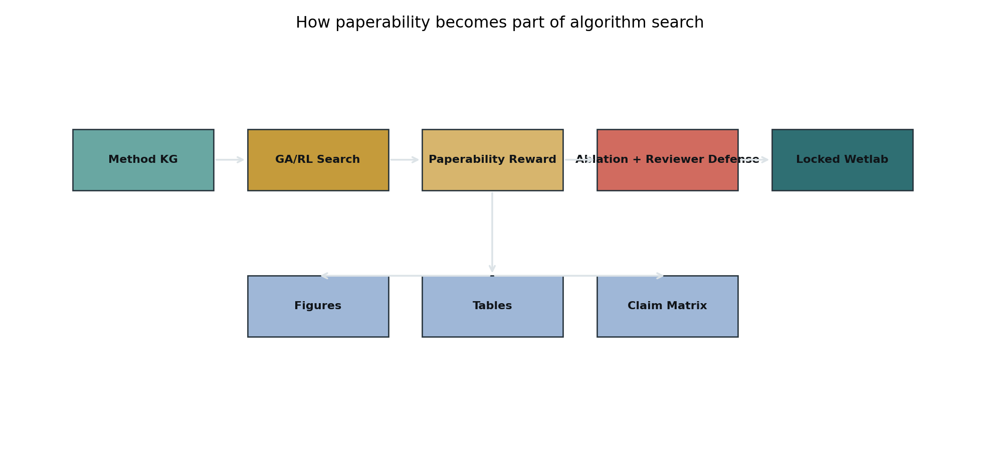
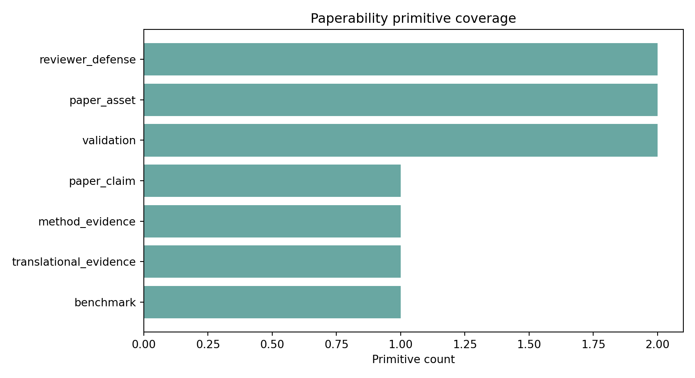
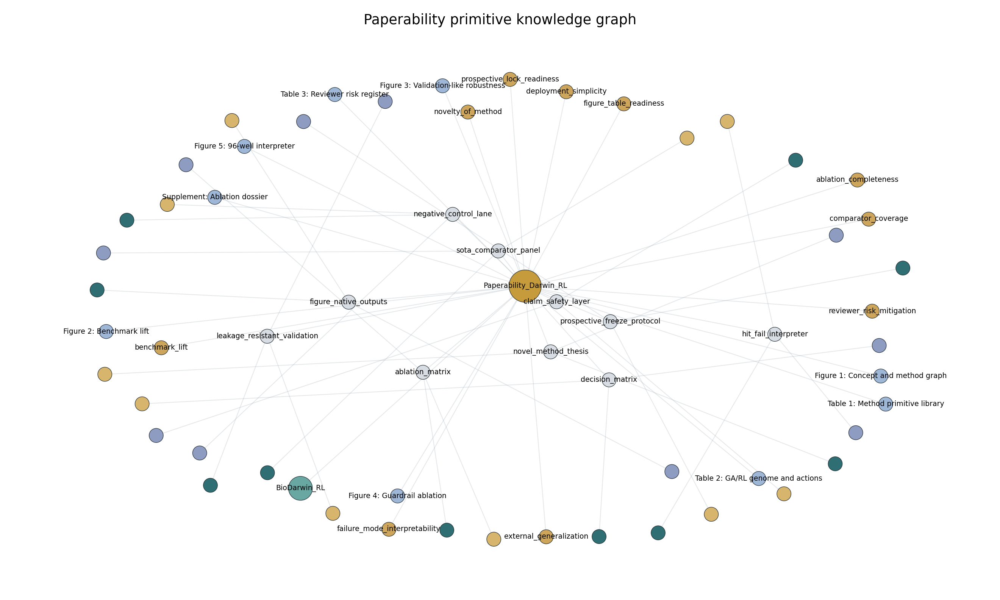

01Summary
The next algorithm should not only maximize benchmark metrics. It should maximize the probability that the result becomes a defensible paper: clear novelty, locked validation, ablations, comparator moat, interpretable failures and ready-to-inspect figures.
02Figures






03Algorithm Ranking
| algorithm | all_AUPRC | all_AUROC | all_top96_precision | validation_like_AUPRC | low_leakage_AUPRC | v6_smoke_AUPRC | benchmark_lift | external_generalization | prospective_lock_readiness | novelty_of_method | ablation_completeness | failure_mode_interpretability | comparator_coverage | figure_table_readiness | reviewer_risk_mitigation | deployment_simplicity | paperability_reward |
|---|---|---|---|---|---|---|---|---|---|---|---|---|---|---|---|---|---|
| KG_GA_evolved | 0.933 | 0.943 | 1.000 | 0.978 | 0.757 | 0.812 | 1.000 | 1.000 | 0.950 | 0.950 | 0.720 | 0.880 | 0.950 | 0.950 | 0.850 | 0.600 | 0.922 |
| CROSS_claimsafe | 0.861 | 0.864 | 1.000 | 0.846 | 0.617 | 0.788 | 0.746 | 0.804 | 0.850 | 0.600 | 0.580 | 0.820 | 0.750 | 0.820 | 0.880 | 0.720 | 0.750 |
| CROSS_integrated | 0.878 | 0.896 | 1.000 | 0.714 | 0.573 | 0.790 | 0.808 | 0.606 | 0.800 | 0.550 | 0.550 | 0.780 | 0.750 | 0.820 | 0.720 | 0.720 | 0.703 |
| CROSS_stress | 0.872 | 0.873 | 0.948 | 0.651 | 0.601 | 0.777 | 0.785 | 0.512 | 0.700 | 0.500 | 0.450 | 0.700 | 0.600 | 0.650 | 0.550 | 0.800 | 0.616 |
| CROSS_BMA | 0.861 | 0.860 | 0.927 | 0.660 | 0.636 | 0.767 | 0.745 | 0.526 | 0.700 | 0.550 | 0.450 | 0.650 | 0.600 | 0.650 | 0.550 | 0.750 | 0.613 |
| CROSS_finetuned | 0.841 | 0.863 | 0.875 | 0.606 | 0.669 | 0.681 | 0.678 | 0.445 | 0.650 | 0.500 | 0.420 | 0.620 | 0.600 | 0.650 | 0.550 | 0.740 | 0.570 |
| BigMHC_IM | 0.672 | 0.722 | 0.875 | 0.334 | 0.374 | 0.672 | 0.084 | 0.039 | 0.550 | 0.250 | 0.350 | 0.420 | 0.600 | 0.650 | 0.550 | 0.780 | 0.340 |
| BigMHC_EL | 0.648 | 0.719 | 0.729 | 0.308 | 0.306 | 0.866 | 0.000 | 0.000 | 0.550 | 0.250 | 0.350 | 0.420 | 0.600 | 0.650 | 0.550 | 0.780 | 0.321 |
04Reward
| reward_component | weight | purpose |
|---|---|---|
| benchmark_lift | 0.160 | clear quantitative improvement over public and internal comparators |
| external_generalization | 0.150 | held-out source/cohort/HLA/sequence-cluster performance |
| prospective_lock_readiness | 0.140 | score and thresholds can be frozen before wetlab or clinical readout |
| novelty_of_method | 0.130 | not just another ensemble; contains a distinct method contribution |
| ablation_completeness | 0.110 | each major primitive has an on/off or replacement control |
| failure_mode_interpretability | 0.100 | algorithm explains why hits and fails occur |
| comparator_coverage | 0.080 | includes SOTA/public baselines and internal baselines |
| figure_table_readiness | 0.070 | naturally yields publishable figures, tables and decision matrices |
| reviewer_risk_mitigation | 0.040 | co-located caveats, leakage audits and claim boundaries |
| deployment_simplicity | 0.020 | can be run and reproduced without excessive infrastructure |
05Primitives
| primitive | category | gene | rl_action | why_it_matters | required_evidence |
|---|---|---|---|---|---|
| novel_method_thesis | paper_claim | algorithm_contribution_statement | increase_method_distinctiveness | Turns a performance stack into a methods-paper claim. | method graph, genome definition, baseline contrast |
| sota_comparator_panel | benchmark | external_comparator_set | add_or_update_public_baseline | Prevents the result from looking like an internal leaderboard. | BigMHC, PRIME, NetMHCpan, DeepImmuno, ImmunoStruct when available |
| leakage_resistant_validation | reviewer_defense | split_policy | switch_to_stricter_holdout | Blocks the most common biomedical AI rejection risk. | source, patient, HLA, sequence-cluster and low-leakage splits |
| ablation_matrix | method_evidence | primitive_on_off_controls | schedule_ablation | Shows which part of the algorithm actually contributes. | KG-only, GA-only, RL-policy, guardrail, modality, fusion ablations |
| prospective_freeze_protocol | validation | locked_threshold_and_score | freeze_candidate_for_wetlab | Converts retrospective SOTA signal into defensible prospective evidence. | hash/versioned score table, preregistered threshold, no post-hoc tuning |
| hit_fail_interpreter | translational_evidence | failure_mode_taxonomy | allocate_failure_mode_assay | Makes the wetlab result useful even when a candidate fails. | candidate call table, endpoint unlock table, decomposition by assay arm |
| figure_native_outputs | paper_asset | auto_figure_bundle | prefer_plot_ready_artifact | Forces the algorithm to emit artifacts that reviewers can inspect. | benchmark plot, KG plot, reward plot, top-k plot, failure-mode plot |
| claim_safety_layer | reviewer_defense | claim_boundary_cap | add_claim_guardrail | Lets strong results be shown without overselling clinical proof. | claim tiers, blockers, caveats, prospective-validation status |
| negative_control_lane | validation | negative_control_design | add_specificity_control | Distinguishes real biological signal from dataset artifacts. | decoy peptides, scrambled controls, unrelated target controls or null modules |
| decision_matrix | paper_asset | editor_reviewer_decision_table | summarize_claim_unlock | Compresses complex algorithm output into publishable decision logic. | algorithm, evidence, caveat, disposition, next validation |
06Paper Unlock Map
| asset | name | purpose | source_artifact |
|---|---|---|---|
| Figure 1 | Concept and method graph | Show literature-to-primitive-to-GA/RL architecture | method_kg_nodes/edges + loop schematic |
| Figure 2 | Benchmark lift | Show KG-GA vs BigMHC/CROSS-Neo comparators | kg_ga_benchmark.tsv |
| Figure 3 | Validation-like robustness | Show source/low-leakage/generalization checks | kg_ga_source_benchmark.tsv |
| Figure 4 | Guardrail ablation | Show proxy/dominance/leakage guard effect | planned ablation matrix |
| Figure 5 | 96-well interpreter | Show actual hit/fail decomposition after wetlab | v6 candidate_calls + endpoint_calls |
| Table 1 | Method primitive library | List public methods and reusable primitives | method_primitives.tsv |
| Table 2 | GA/RL genome and actions | Define algorithm discovery search space | rl_ga_action_space.tsv |
| Table 3 | Reviewer risk register | Leakage/proxy/overfit/claim-safety defenses | guardrails.tsv + paperability guards |
| Supplement | Ablation dossier | KG-only, GA-only, RL-policy, modality and guardrail ablations | future locked run |
07Knowledge Graph
| node | node_type | layer | category | weight | purpose | source |
|---|---|---|---|---|---|---|
| BioDarwin_RL | base_framework | algorithm_discovery | NaN | NaN | NaN | |
| Paperability_Darwin_RL | controller | paperability | NaN | NaN | NaN | |
| BigMHC, PRIME, NetMHCpan, DeepImmuno, ImmunoStruct when available | evidence | NaN | benchmark | NaN | NaN | |
| KG-only, GA-only, RL-policy, guardrail, modality, fusion ablations | evidence | NaN | method_evidence | NaN | NaN | |
| algorithm, evidence, caveat, disposition, next validation | evidence | NaN | paper_asset | NaN | NaN | |
| benchmark plot, KG plot, reward plot, top-k plot, failure-mode plot | evidence | NaN | paper_asset | NaN | NaN | |
| candidate call table, endpoint unlock table, decomposition by assay arm | evidence | NaN | translational_evidence | NaN | NaN | |
| claim tiers, blockers, caveats, prospective-validation status | evidence | NaN | reviewer_defense | NaN | NaN | |
| decoy peptides, scrambled controls, unrelated target controls or null modules | evidence | NaN | validation | NaN | NaN | |
| hash/versioned score table, preregistered threshold, no post-hoc tuning | evidence | NaN | validation | NaN | NaN | |
| method graph, genome definition, baseline contrast | evidence | NaN | paper_claim | NaN | NaN | |
| source, patient, HLA, sequence-cluster and low-leakage splits | evidence | NaN | reviewer_defense | NaN | NaN | |
| algorithm_contribution_statement | ga_gene | NaN | paper_claim | NaN | NaN | |
| auto_figure_bundle | ga_gene | NaN | paper_asset | NaN | NaN | |
| claim_boundary_cap | ga_gene | NaN | reviewer_defense | NaN | NaN | |
| editor_reviewer_decision_table | ga_gene | NaN | paper_asset | NaN | NaN | |
| external_comparator_set | ga_gene | NaN | benchmark | NaN | NaN | |
| failure_mode_taxonomy | ga_gene | NaN | translational_evidence | NaN | NaN | |
| locked_threshold_and_score | ga_gene | NaN | validation | NaN | NaN | |
| negative_control_design | ga_gene | NaN | validation | NaN | NaN | |
| primitive_on_off_controls | ga_gene | NaN | method_evidence | NaN | NaN | |
| split_policy | ga_gene | NaN | reviewer_defense | NaN | NaN | |
| Figure 1: Concept and method graph | paper_asset | NaN | NaN | Show literature-to-primitive-to-GA/RL architecture | method_kg_nodes/edges + loop schematic | |
| Figure 2: Benchmark lift | paper_asset | NaN | NaN | Show KG-GA vs BigMHC/CROSS-Neo comparators | kg_ga_benchmark.tsv | |
| Figure 3: Validation-like robustness | paper_asset | NaN | NaN | Show source/low-leakage/generalization checks | kg_ga_source_benchmark.tsv | |
| Figure 4: Guardrail ablation | paper_asset | NaN | NaN | Show proxy/dominance/leakage guard effect | planned ablation matrix | |
| Figure 5: 96-well interpreter | paper_asset | NaN | NaN | Show actual hit/fail decomposition after wetlab | v6 candidate_calls + endpoint_calls | |
| Supplement: Ablation dossier | paper_asset | NaN | NaN | KG-only, GA-only, RL-policy, modality and guardrail ablations | future locked run | |
| Table 1: Method primitive library | paper_asset | NaN | NaN | List public methods and reusable primitives | method_primitives.tsv | |
| Table 2: GA/RL genome and actions | paper_asset | NaN | NaN | Define algorithm discovery search space | rl_ga_action_space.tsv | |
| Table 3: Reviewer risk register | paper_asset | NaN | NaN | Leakage/proxy/overfit/claim-safety defenses | guardrails.tsv + paperability guards | |
| ablation_matrix | paperability_primitive | NaN | method_evidence | NaN | NaN | |
| claim_safety_layer | paperability_primitive | NaN | reviewer_defense | NaN | NaN | |
| decision_matrix | paperability_primitive | NaN | paper_asset | NaN | NaN | |
| figure_native_outputs | paperability_primitive | NaN | paper_asset | NaN | NaN | |
| hit_fail_interpreter | paperability_primitive | NaN | translational_evidence | NaN | NaN | |
| leakage_resistant_validation | paperability_primitive | NaN | reviewer_defense | NaN | NaN | |
| negative_control_lane | paperability_primitive | NaN | validation | NaN | NaN | |
| novel_method_thesis | paperability_primitive | NaN | paper_claim | NaN | NaN | |
| prospective_freeze_protocol | paperability_primitive | NaN | validation | NaN | NaN | |
| sota_comparator_panel | paperability_primitive | NaN | benchmark | NaN | NaN | |
| ablation_completeness | reward_component | NaN | NaN | 0.110 | each major primitive has an on/off or replacement control | NaN |
| benchmark_lift | reward_component | NaN | NaN | 0.160 | clear quantitative improvement over public and internal comparators | NaN |
| comparator_coverage | reward_component | NaN | NaN | 0.080 | includes SOTA/public baselines and internal baselines | NaN |
| deployment_simplicity | reward_component | NaN | NaN | 0.020 | can be run and reproduced without excessive infrastructure | NaN |
| external_generalization | reward_component | NaN | NaN | 0.150 | held-out source/cohort/HLA/sequence-cluster performance | NaN |
| failure_mode_interpretability | reward_component | NaN | NaN | 0.100 | algorithm explains why hits and fails occur | NaN |
| figure_table_readiness | reward_component | NaN | NaN | 0.070 | naturally yields publishable figures, tables and decision matrices | NaN |
| novelty_of_method | reward_component | NaN | NaN | 0.130 | not just another ensemble; contains a distinct method contribution | NaN |
| prospective_lock_readiness | reward_component | NaN | NaN | 0.140 | score and thresholds can be frozen before wetlab or clinical readout | NaN |